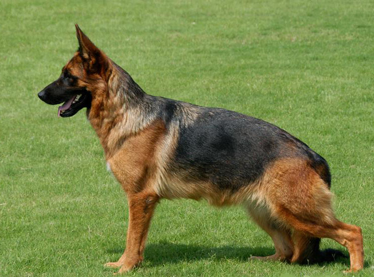
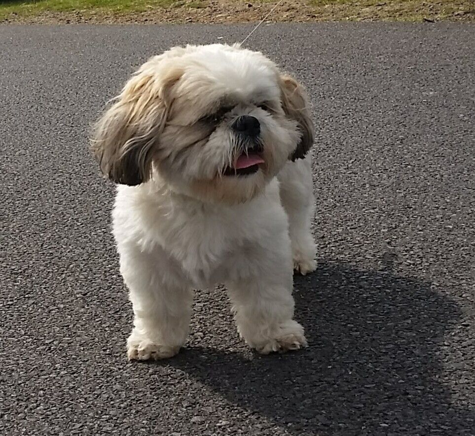
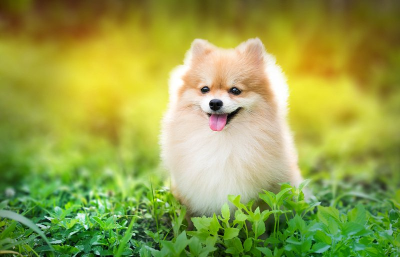
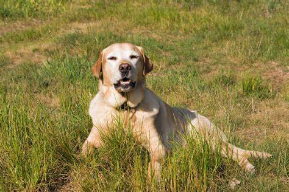
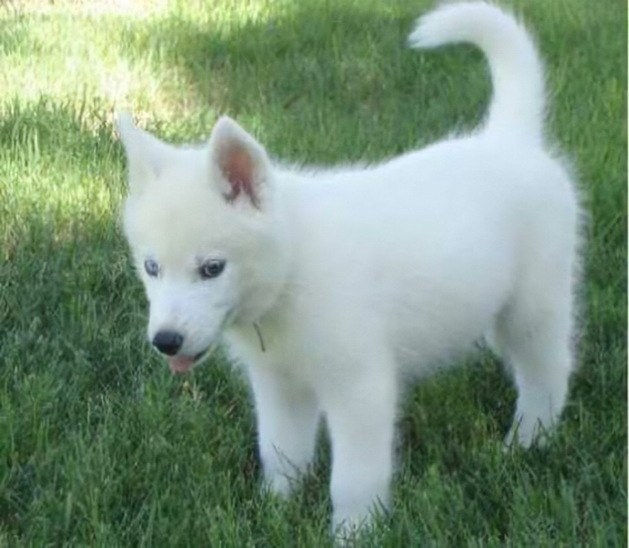
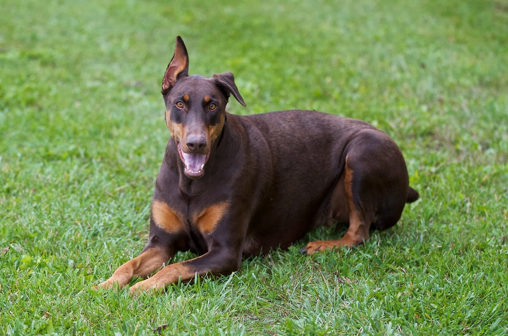
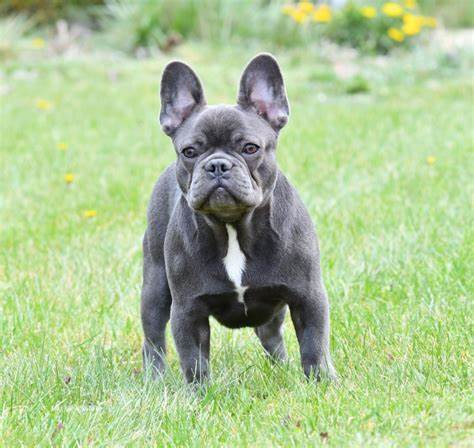
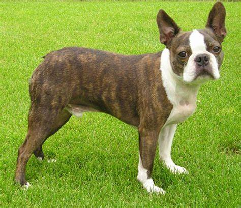
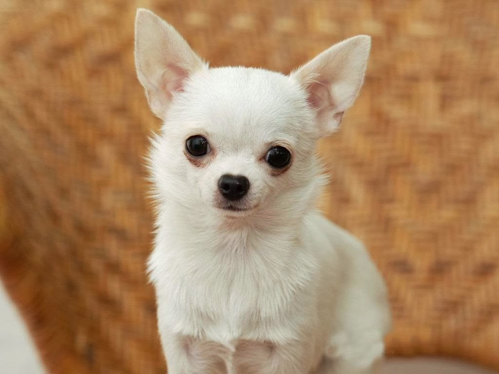
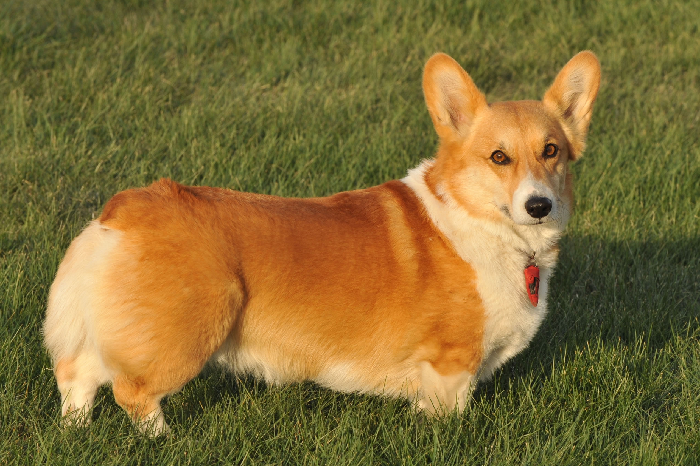

| Image | Breed | Description |
|---|---|---|
|  | German Sheperd | German Sheperds are a well known breed and they are very popular as well. They are very strong dogs and can create a great connection with their owners. |
|  | Shih Tzu | Shih Tzu's are small dogs with very cute faces and big round eyes. They are very playful as well. |
|  | Pomeranian | Pomeranians are small dogs like toys, they are called toy dogs breed. They are very lively dogs. They can adapt to their environment and get along with their owners. |
|  | Labrador Retriver | They are medium dogs who are very playful. They are very loyal to their owners |
|  | Siberian Husky | Siberian Husky's have very fierce eyes that are most of the time grey or blue. They are very lovable pets. |
|  | Doberman Pinscher | They are very tall dogs and they are very strong. They are intellegent dogs and energetic. |
|  | French Bulldog | The French Bulldog resembles a Bulldog in miniature, except for the large, erect 'bat ears' that are the breed's trademark feature. The head is large and square, with heavy wrinkles rolled above the extremely short nose. The body beneath the smooth, brilliant coat is compact and muscular. |
|  | Boston Terrier | Boston Terriers make for great family pets and are known for their affectionate nature and bursts of energy. They love human interaction and like to be doted on. They are perfectly happy in smaller homes and apartments providing their exercise needs are met. |
|  | Chihuahua | - scary but deadly - scary but playful - cute but deadly |
|  | Corgi | Among the most agreeable of all small housedogs,Corgi is a strong, athletic, and lively little herder who is affectionate and companionable without being needy. They are one the world's most popular herding breeds. |